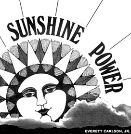
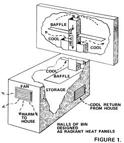
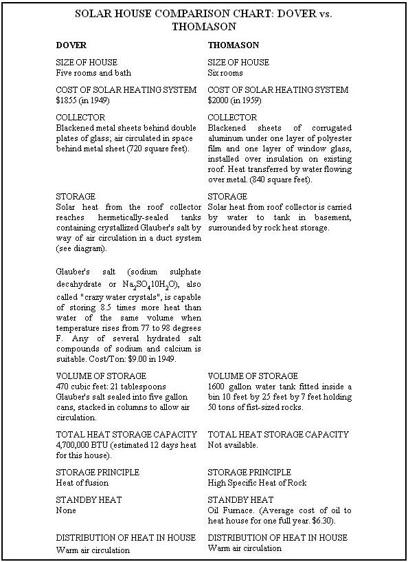

Sunshine Power-heating a home by harvesting the energy which flows freely down from above-is a relatively new concept for homestead. However, reams of money and heavy brainwork over the years have gone into sophisticaed solar power projects and that research can now be turned to light-or rather, heat-a place in the outback.
In the past, most buildings which have successfully utilized solar heat have been costly experiments aimed at proving an adaptability for suburban homes. This meant working within the limits of traditional suburban architecture to a large degree. Back at the homestead, outside of this genteel straitjacket, the subtle art of sunshine power can be more properly exploited. If your place is away from it all, and you like the idea of a cheap heating plant which isn't helping to use up the last of our fossil fuels-the sun may be for you!
BIBLIOGRAPHY
THE COMING AGE. OF SOLAR ENERGY, Daniel S.Halacy, Jr., Harper & Row, New York, Evanston, and London, 1964.
DIRECT USE OF THE SUN'S ENERGY, Farrington Daniels, Yale University Press, New Haven and London, 1963.
ENERGY FOR MAN, Hans Thirring, Harper Torchbook 556, Harper and Row, New York, 1958
THE OWNER-BUILT HOME, Ken Kern, Vita Village Technology Handbook, 1970.
SOLAR ENERGY, Hans Rau (translated by Maxim Schur), T he MacMillan Co., New York, 1964.
WORLD SYMPOSIUM ON APPLIED SOLAR ENERGY/ Proceedings, Stanford Research Institute, Menlo Park, Cal., 1956.
YOUR ENGINEERED HOUSE, Rex Reed, J.P. Lippincott, 1964.
The back issue magazine stacks down at the library also have a lot to offer. For example:
MECHANIX ILLUSTRATED, April 1959, Page 106.
POPULAR MECHANICS, February 1965, Page 89: October 1957, Page 159.
POPULAR SCIENCE, February 1958, Page 110.
Harry E. Thomason, whose sun house we mention, has a MOTHER-sized booklet available titled: "Solar House Models". It's supplied by mail for $1 from: Edmund Scientific Co., 101 East Gloucester Pike, Barrington, New Jersey 08007. The author covers both theory and practice pretty thoroughly . . . from firsthand experience.
The basic principle of solar heating, long used for building greenhouses, is that the transparency of glass is greater for visible light than for the infra-red part of the light spectrum. Early attempts at the solar house relied extensively on this single principle. The first models, developed in the early Thirties by Prof. F. W. Hutchinson, were almost conventional structures save for their oversize windows on the south side. They were fine so long as the sun was shining . . . but eventually used more fuel than conventional homes because-soon after nightfall-the large area of exposed glass lost all the heat which had been gathered during the day. A heating system which goes into reverse at sunset and never starts up at all on cloudy days is obviously not much competition for the fossil fuel burners.
T here are ways to change this situation for the better, however. Insulated glass has solved the reversal problem and interior shutters which close over the windows at night provide an additional barrier against heat loss. Even in a normal house, with regular single-pane windows, interior shutters can cut heating bills by thirty percent. This was shown in a number of test houses situated between latitudes 40-43 degrees (e.g. New York-Nebraska) . . . not the warmest of winter's zones. Incidentally, well-sealed double-pane windows or insulated glass can reduce heat loss by an additional 20 percent (same ordinary homes, same area).
Our first design principle then, is: USE LARGE SOUTH FACING WINDOWS WITH SOLID INTERIOR SHUTTERS TO BE CLOSED AT NIGHT.
These windows need not be conventional, or expensive. As Rex Reed points out in his very useful "Your Engineered House"-(J. P. Lippincott 1964) a window does not also have to be a ventilator (it needn't open), so a simple homemade unit can offer large windows at low prices. Reed points out that you can make a wall out of glass as easily as from anything else. A simple design from his book is shown with this article (See fig. 3).
The framework is a simple box of 1" boards as wide as the thickness of the wall. Narrow strips are nailed on to form channels for the glass, which is set in at an angle. These holding channels can be made fairly tight, so that a little caulking rather than a lot of putty will make a windproof seal. An added advantage is that the sills are now on the outside, and so is the dust that settles on them. One less chore to do!
You could use insulated glass for the angled sun catcher panels . . . but a cheaper and quite adequate solution would be to hang a sheet of heavy duty clear plastic over the entire window wall for the winter.
You will need ventilation, but not through the windows. Reed suggests simple screened openings, fitted with solid (heat barrier) doors that can be closed when needed. Unlike windows, these vents can be located solely to take advantage of the best cool air flows in the summertime. (Take a look at Reed's book-his ideas on door construction alone seem worth the price.)
So, once the sun has shone in, it CAN be locked up for the night. The problem remaining is what to do in a cloud-ridden area that receives no sun at all for a week at a time. Somehow you must capture the heat when you can get it . . . to use when and where you need it. And these three requirements are the key to true solar house design.
A modern solar heating plant consists of three parts: a collector of solar energy, a storage capacity, and a distribution system . . . big windows alone can't do the job.
Solar plants have proved most efficient in areas below 45 degrees latitude (e.g. south of New York-Nebraska) but the incidence of clear, sunny days is the real criterion. Local cloudiness makes nonsense of any hard and fast rule; so even if you're in the north, don't give up on the idea of solar heat yet. Cutting the use of traditional fuels by 75% in, say, northern New York state is not an unreasonable goal.
Energy from the sun is usually measured in terms of 'horizontal incidence'-that is, the amount of energy falling on a horizontal surface. For 40 degrees latitude, the yearly average is 500 BTU per square foot per day. You can improve on this by tilting the collector (s) of your system up from the horizontal toward the south (and the sun). An angle equal to the latitude (i.e. 40 for 40) decreases summer insulation by 18% but increases the mid-winter intake by a whopping 130% . . . an annual overall improvement of 25%.
Some further juggling is possible. Increasing the angle by 23 degrees over the latitude (63 at 40) favors the winter solstice; a lesser amount of tilt favors the center of the cold season, which comes about one month after the solstice.
A good workable average seems to be latitude plus 15 degrees (55 degrees angle for latitude 40).
A vertical collector (like a billboard) might seem easier to build but it gives away 10-15% to tilted collectors during December, January and February . . . and even more during the rest of the year.
So, a tilted collector it must be, and ideally, tilted at the angle of latitude plus 15 degrees.
In the past, however, such ideals have been compromised. To understand the part compromise has played in collector design, look at Whillier's comments on the design of the 1953 MIT house. The home was planned for 1100-1200 square feet and it's design cost was $12,000-$18,000 EXCLUSIVE of heating system. Hardly a bargain, even in 1953. And-for appearance-the architect was allowed the range of 45 to 75 degrees collect-or angle. I suppose we should be thankful that, at least, the collector was to face south . . . some solar houses in suburbs have been aligned to the streets rather than the sun! No wonder there are now only about twenty solar-heated homes (in spite of a "reliable" forecast of 13 million units in the United States by 1975!)
One useful thing (to you) to come out of the MIT study was the general shape of a solar house. Four designs were considered, three of which are shown here (See fig. 2). The fourth included a curved wall, rejected on a cost basis.
The final package arrived at was TYPE A. Type A is a two-story house with the collector oriented to the south. The eastwest dimension of Type A is about 20% greater than the north-south dimension. These figures are close to the optimum of minimum cost and heating load for the floor area and the shape is well worth considering for the homesteader. Here the collector serves as a major portion of the roof (which saves material) and allows room beneath it for south-facing windows.
A house of this pattern is theoretically impractical for total solar heat in a climate as harsh as upper New England and a 600 square foot collector would require auxiliary heat (of about 20% of total). A collector of twice the area would still require some additional heat. On the other hand, the MIT house used the southfacing windows . . . and on sunny days in winter the extra heat trapped required excessive ventilation. So you'll have to work out a balance. The lower efficiency of a home-brewed unit should preclude the danger of having much excess heat to throw away, anyhow.
Our second design principle: USE THE M.I.T. PACKAGE SHAPE A, AS SMALL AS PRACTICAL.
What about the design of the collector itself? The least expensive approach is to absorb the sun's energy with a black surface. Expensive focusing collectors (as used for solar cooking) are not needed in house heating because the collector surface is large and the desired temperature change-compared to cooking-is not great. One of the simplest designs (and owner built) was that used by Harry E. Thomason in Washington, D.C. His two houses were pictured and described in the February 1965 Popular Mechanics.
Thomason converted an existing roof into a collector by first laying down insulation, then blackened sheets of corrugated aluminum and finally . . . 840 square feet of glass! (Possibly Thomason would today cut costs by substituting black plastic sheeting-the composter's friend-for the sheets of aluminum in the sandwich-Ed.)
To transfer the heat down into storage-water tanks surrounded by bins filled with 50 tons of fist-sized rocks-Thomason in stalled a perforated pipe along the apex of the collector/roof. A light downward flow of water from the pipe and across the metal was sufficient to move the heat.
Another oft-quoted design is The Dover House by Dr. Maria Telkes (architect, Eleanor Raymond). The sun-trap sandwich chosen in this case was blackened metal sheeting overlaid by double plates of glass. Circulating air behind the metal carried the heat off to storage and distribution (See fig. 1).
In these two designs we can see many of the contrasts possible (and practical) in solar heat design. Let's look at them in more detail (see Dover vs. Thomason comparison chart).
Each of these plans has some advantages. The Telkes plant had no running costs, except electricity for the fan. Neither system produces smoke, soot, or fumes. There is no stoking, refueling, cleaning or repair, and no wasting of valuable fossil fuel. A further advantage is that air (used in the heat transfer) can't freeze; several water-based systems have had to add anti-freeze substances.
On the other hand, Thomason's water-storage system could doubtedly be cheaper (especially if you have labor at hand to dig, and you're into gathering stone like Scott Nearing did). small commune or large family could probably gather 50 tons of rocks eventually-and it'd sure make plowing a lot easier.
A possible compromise to consider would be the use of a by of both these methods . . . a smaller amount of Glauber's salt than the Dover house, within a larger bin of crushed rock. You should get some of the advantages of both and, undoubtedly some of the disadvantages. It's better than burning all that oil, though.
If you're going to use heated air to warm the house, you might as well use air all the way because-if you use water-you'll need expensive pumps. Although both the Thomason and Dover houses use electricity to drive fans, etc., it might be possible to arrange a "no moving parts" system of heat "chimneys" to move the air . . . just as the Model T. Ford cooling system moved water. The idea has been used for cooling desert houses; perhaps it can also be used to move heating air (Yes. Wendell Thomas has successfully applied the idea to two homes in the mountains of North Carolina. We'll describe his system soon in MOTHER-Ed.) In any case, if you must use a fan, the electricity doesn't have to be bought from a high-pollution generating plant. Wind-powered and methane gas-powered generators can be set up on the homestead. Ken Kern shows solar-tempered houses in which wind-powered generators provide the fan power.
Alright. Let's see what your solar-heated homestead house might look like (See fig. 4): As small as practical, it should prob ably be based on the M.I.T. "Type A" design with a roof collector oriented to the south at the angle of latitude plus 15 degrees. The structure would have large south-facing windows with interior shutters; no windows or doors on the west (to shield against the coldest winds); entrance on the eastern (most sheltered) end; and relatively small, well-sealed windows on the north.
You might also try a reflector at the base of the collector. It would, of course, increase the collector's efficiency and-on the "A" design-shield the large windows during summer heat.
Materials and construction techniques-of both the house and the solar-heating system-are free choice . . . but, whatever you choose, never forget to insulate the structure well. Once you've caught the sun, you can't afford to throw it away!
IF THIS ARTICLE HAS WHETTED YOUR APPETITE FOR MORE ON SOLAR ENERGY, HANG ON... ITS COMING!
|
 |
 |
 |